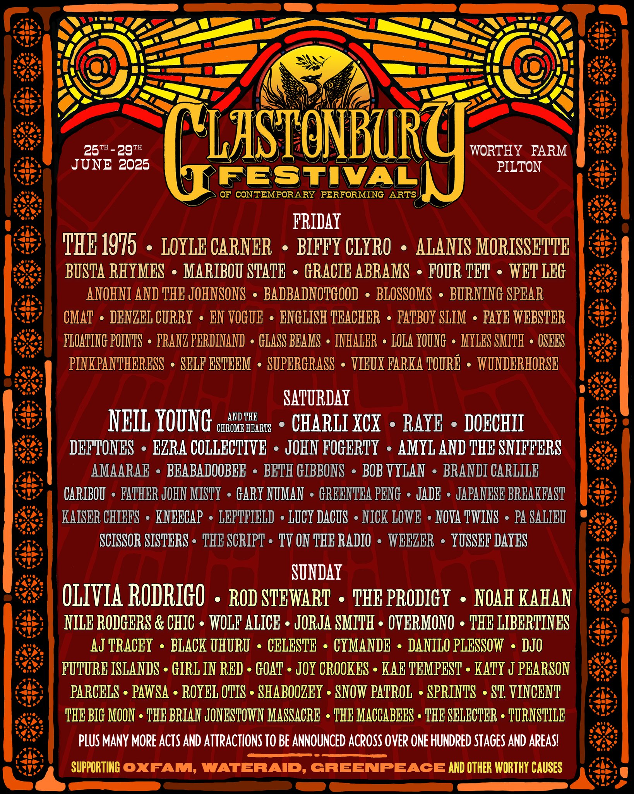

GLSTONEBURY
Glastonbury Festival, the world's largest outdoor music festival combining freedom and art.

- 일시: 2025.6.27~30
- 장소: 영국 서머싯주 글래스톤베리
- 페스티벌 시작: 1970년, 마이클 이비스 주최
- 개최 시기: 매년 6월 말 5일간
- 관람객 규모: 약 20만 명 이상
헤드라이너
- The 1975 금요일 (6월 27일)
- Neil Young and the Chrome Hearts 토요일 (6월 28일)
- Olivia Rodrigo 일요일 (6월 29일)
- Rod Stewart 레전드 슬롯 (일요일 오후)